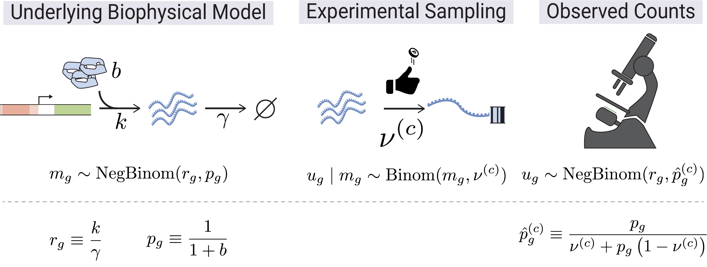

Welcome to SCRIBE¶
SCRIBE (Single-Cell RNA-seq Inference with Bayesian Estimation) is a comprehensive Python package for Bayesian analysis of single-cell RNA sequencing (scRNA-seq) data. Built on JAX and NumPyro, SCRIBE provides a unified framework for probabilistic modeling, variational inference, uncertainty quantification, differential expression, and model comparison in single-cell genomics.
Generative Model¶

SCRIBE is grounded in a biophysical generative model of scRNA-seq count data. Transcription (rate \(b\)) and degradation (rate \(\gamma\)) set the steady-state mRNA content per gene, giving rise to a Negative Binomial distribution over true molecular counts \(m_g\) with parameters \(r_g\) and \(p_g\). During library preparation each molecule is independently captured with cell-specific probability \(\nu^{(c)}\), so the observed UMI count \(u_g\) follows a Binomial sub-sampling of \(m_g\). Marginalizing over the latent counts yields a Negative Binomial likelihood for the observations with an effective success probability \(\hat{p}_g^{(c)}\) that absorbs the capture efficiency.
For the full mathematical derivation, see the Theory section.
Why SCRIBE?¶
- Unified Framework: Single
scribe.fit()interface for SVI, MCMC, and VAE inference methods - Compositional Models: Four constructive likelihoods -- from the base Negative Binomial up to zero-inflated models with variable capture probability
- Compositional Differential Expression: Bayesian DE in log-ratio coordinates with proper uncertainty propagation and error control (lfsr, PEFP)
- Model Comparison: WAIC, PSIS-LOO, stacking weights, and goodness-of-fit diagnostics for principled model selection
- GPU Accelerated: JAX-based implementation with automatic GPU support
- Flexible Architecture: Three parameterizations, constrained/unconstrained modes, hierarchical priors, horseshoe sparsity, and normalizing flows
- Scalable: From small experiments to large-scale atlases with mini-batch support
- Production-Ready CLI:
scribe-inferprovides reproducible, config-driven inference with SLURM integration and automatic covariate-split orchestration;scribe-visualizegenerates diagnostic plots for any completed run
Key Features¶
- Three Inference Methods:
- SVI for speed and scalability
- MCMC (NUTS) for exact Bayesian inference
- VAE for representation learning with normalizing flow priors
- Constructive Likelihood System: Negative Binomial as the base, extended with zero inflation and/or variable capture probability
- Multiple Parameterizations: Canonical, mean probs, and mean odds
(with
linked/odds_ratioaliases), constrained or unconstrained priors - Advanced Guide Families: Mean-field, low-rank, joint low-rank, and amortized variational guides
- Mixture Models: K-component mixtures for cell type discovery with annotation-guided priors
- Hierarchical Priors: Gene-specific and dataset-level hierarchical structures with optional horseshoe sparsity
- Bayesian Differential Expression: Parametric, empirical (Monte Carlo), and shrinkage (empirical Bayes) methods in CLR/ILR coordinates
- Model Comparison: WAIC, PSIS-LOO, stacking, per-gene elpd, and goodness-of-fit via randomized quantile residuals
- Seamless Integration: Works with AnnData and the scanpy ecosystem
Model Construction Space¶
SCRIBE models are built compositionally. The likelihood is constructed by layering extensions on top of a base Negative Binomial (NB) model, then configured with a parameterization, constraint mode, optional extensions, and an inference method:
graph TD
subgraph likelihood ["1 - Likelihood Construction"]
NB["Negative Binomial<br/><i>base model</i>"]
ZINB["Zero-Inflated NB"]
NBcapture["NB + variable capture"]
ZINBcapture["ZINB + variable capture"]
NB -->|"+ zero inflation"| ZINB
NB -->|"+ variable capture"| NBcapture
ZINB -->|"+ variable capture"| ZINBcapture
NBcapture -->|"+ zero inflation"| ZINBcapture
end
subgraph parameterization ["2 - Parameterization"]
canonical["canonical<br/><i>sample p, r directly</i>"]
meanProbs["mean_prob<br/><i>sample p, mu; derive r</i>"]
meanOdds["mean_odds<br/><i>sample phi, mu; derive p, r</i>"]
end
subgraph constraint ["3 - Constraint Mode"]
constrained["constrained<br/><i>Beta, LogNormal, BetaPrime</i>"]
unconstr["unconstrained<br/><i>Normal + transforms</i>"]
end
subgraph extensions ["4 - Optional Extensions"]
mixture["Mixture<br/><i>K components</i>"]
hierarchical["Hierarchical Priors<br/><i>gene-specific p, gate</i>"]
multiDataset["Multi-Dataset<br/><i>per-dataset parameters</i>"]
horseshoe["Horseshoe<br/><i>sparsity priors</i>"]
annotationPrior["Annotation Priors<br/><i>soft cell-type labels</i>"]
bioCap["Biology-Informed<br/><i>capture prior</i>"]
end
subgraph infer ["5 - Inference Method"]
SVI_node["SVI<br/><i>fast, scalable</i>"]
MCMC_node["MCMC<br/><i>exact posterior</i>"]
VAE_node["VAE<br/><i>learned representations</i>"]
end
subgraph guide ["6 - Guide Family"]
meanField["Mean-Field"]
lowRank["Low-Rank"]
jointLowRank["Joint Low-Rank"]
amortized["Amortized"]
flows["Normalizing Flows<br/><i>VAE prior</i>"]
end
likelihood --> parameterization
parameterization --> constraint
constraint --> extensions
extensions --> infer
SVI_node --> guide
VAE_node --> guideThis compositional design means you can combine 4 likelihoods x 3 parameterizations x 2 constraint modes as a starting point, then layer on mixture components, hierarchical priors, multi-dataset structure, and more.
Available Models¶
Likelihood Construction¶
SCRIBE's four likelihoods build on each other -- the base Negative Binomial model can be extended with zero inflation and/or variable capture probability:
| Likelihood | Code | Construction | Extra Parameters | Best For |
|---|---|---|---|---|
| Negative Binomial | "nbdm" |
Base model | -- | Very tight total-UMI distribution |
| NB + variable capture | "nbvcp" |
NB + capture probability | p_capture |
Typical heterogeneous library sizes |
| Zero-Inflated NB | "zinb" |
NB + zero inflation | gate |
Excess zeros after VCP ruled out |
| ZINB + variable capture | "zinbvcp" |
ZINB + capture probability | gate, p_capture |
Both ZI and VCP supported by diagnostics |
Any of the above can be extended to mixture models with n_components=K
for subpopulation analysis.
Parameterizations¶
Each likelihood can be parameterized in three ways:
| Name | parameterization= |
Aliases | Core | Derived | When to Use |
|---|---|---|---|---|---|
| Canonical | canonical |
standard |
p, r | -- | Direct interpretation |
| Mean probs | mean_prob |
linked |
p, mu | r = mu(1-p)/p | Couples mean and p |
| Mean odds | mean_odds |
odds_ratio |
phi, mu | p = 1/(1+phi), r = mu*phi | Stable when p is near 1 |
Constrained vs Unconstrained¶
| Mode | Prior Distributions | Use Case |
|---|---|---|
| Constrained | Beta, LogNormal, BetaPrime | Default; interpretable parameters |
| Unconstrained | Normal + sigmoid/exp transforms | Optimization-friendly; required for hierarchical priors |
Quick Start¶
import scribe
import scanpy as sc
# Load your single-cell data
adata = sc.read_h5ad("your_data.h5ad")
# Typical default: variable capture when total UMIs vary across cells
results = scribe.fit(adata, model="nbvcp", amortize_capture=True)
# If total UMIs per cell are very homogeneous (~within 2x), try model="nbdm"
# Analyze results
posterior_samples = results.get_posterior_samples()
Customize with Simple Arguments¶
# Zero-inflated model with more optimization steps
results = scribe.fit(
adata,
model="zinb",
n_steps=100_000,
batch_size=512,
)
# Linked parameterization with low-rank guide
results = scribe.fit(
adata,
model="nbdm",
parameterization="linked",
guide_rank=15,
)
# Mixture model for cell type discovery
results = scribe.fit(
adata,
model="zinb",
n_components=3,
n_steps=150_000,
)
Choose Your Inference Method¶
| Method | Engine | Precision | Use Case |
|---|---|---|---|
| SVI | Adam optimizer | float32 | Fast exploration, large datasets |
| MCMC | NUTS sampler | float64 | Exact posterior, gold standard |
| VAE | Encoder-decoder | float32 | Latent representations, embeddings |
# Fast exploration with SVI (default)
svi_results = scribe.fit(adata, model="zinb", n_steps=75_000)
# Exact inference with MCMC
mcmc_results = scribe.fit(
adata,
model="nbdm",
inference_method="mcmc",
n_samples=3000,
n_chains=4,
)
# Representation learning with VAE
vae_results = scribe.fit(
adata,
model="nbdm",
inference_method="vae",
n_steps=50_000,
)
Differential Expression¶
SCRIBE provides a fully Bayesian differential expression framework that respects the compositional nature of scRNA-seq data. All comparisons are performed in log-ratio coordinates (CLR/ILR), propagating full posterior uncertainty.
| Method | Description | Use Case |
|---|---|---|
| Parametric | Analytic Gaussian in ALR space | Fast, requires low-rank logistic-normal fit |
| Empirical | Monte Carlo CLR differences | Assumption-free, from posterior samples |
| Shrinkage | Empirical Bayes scale-mixture prior | Improved per-gene inference, borrows strength across genes |
import jax.numpy as jnp
from scribe import compare
# Fit two conditions
results_ctrl = scribe.fit(adata_ctrl, model="nbdm", n_components=3)
results_treat = scribe.fit(adata_treat, model="nbdm", n_components=3)
# Empirical DE between component 0 across conditions
de = compare(
results_treat, results_ctrl,
method="empirical",
component_A=0, component_B=0,
)
# Gene-level results with practical significance threshold
gene_results = de.gene_level(tau=jnp.log(1.1))
# Call DE genes controlling false sign rate
is_de = de.call_genes(lfsr_threshold=0.05)
Full guide: Differential Expression
Model Comparison¶
Principled Bayesian model comparison with WAIC, PSIS-LOO, stacking weights, per-gene elpd differences, and goodness-of-fit diagnostics:
from scribe import compare_models
mc = compare_models(
[results_nb, results_hierarchical],
counts=counts,
model_names=["NB", "Hierarchical"],
gene_names=gene_names,
)
# Ranked comparison table
print(mc.summary())
# Per-gene elpd differences
gene_df = mc.gene_level_comparison("NB", "Hierarchical")
Full guide: Model Comparison
Getting Started¶
-
Installation
Install SCRIBE and set up your environment
-
Quick Overview
Understand the probabilistic approach behind SCRIBE
-
Quickstart
Run your first inference in minutes
-
Theory
Mathematical foundations of the SCRIBE models
-
Model Selection
Choose the right model for your data
-
User Guide
Inference methods, DE, model comparison, and more
-
scribe-inferCLI
Reproducible, config-driven inference with SLURM integration
-
scribe-visualizeCLI
Post-inference diagnostic plots with recursive and SLURM support
-
API Reference
Full reference for all modules and classes